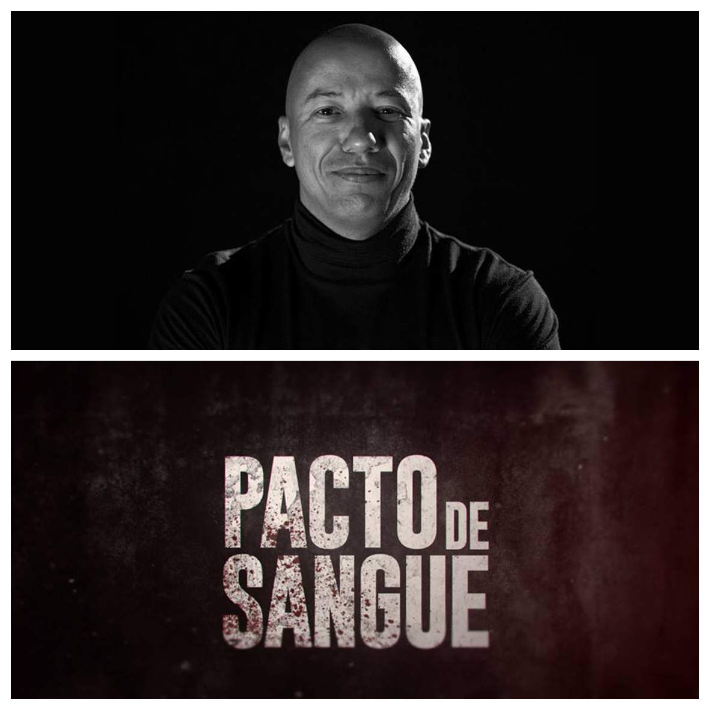

SAMBA - Semana de Produção Multimídia
☰WELLINGTON PINGO
ANA PAULA SILVA
NAIANI SOARES

TEMA
"Produção e distribuição: a importância do planejamento da carreira do conteúdo audiovisual"
A carreira audiovisual exige disciplina em seu planejamento. As dicas e tecnicas de como tornar esse planejamento algo funcional, serão discutidas neste encontro.
Wellington Pingo, diretor de produção de cinema, Tv, vem falar sobre produção e criação de conteúdo. Ele é produtor da Intro Pictures e falará, entre outras coisas sobre a série Pacto de Sangue lançada recentemente pelo canal Space. Vem acompanhado de Naiani Soares, nossa ex-aluna que também fez parte da equipe de produção.
.jpg)
Ana Paula Silva, formada em gestão e produção cultural pela FGV/ RJ, atuou na produção de teatro e eventos corporativos até migrar para a área audiovisual como gerente de projetos e produtora executiva. Em 2013 passou a integrar a equipe da distribuidora Elo Company como gerente de projetos, responsável pela análise e aquisição de conteúdos para todas as mídias, relacionamento com Produtores e elaboração de relatórios operacionais e comerciais. Em 2016, passou a integrar a equipe da produtora Intro Pictures.
Naiani Soares, formada em Cinema e Audiovisual pela Unimonte, atualmente trabalha com acompanhamento, desenvolvimento e comercialização de projetos audiovisuais, com foco em televisão na Intro Pictures. Cursou Produção Multimídia na turma de 2008.